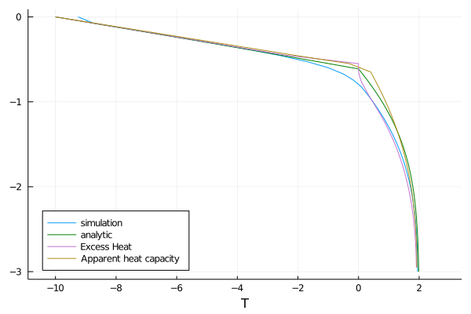

Comparison to Neumann analytic solution
Before reading this tutorial, we recommend that you look over the coupled energy and water tutorial and the freezing front tutorial. The former shows how to solve the heat equation for soil volumetric internal energy ρe_int simultaneously with Richards equation for volumetric liquid water fraction ϑ_l, assuming zero volumetric ice fraction θ_i for all time, everywhere in the domain[a]. The latter shows how to include freezing and thawing, and explains the freeze thaw model employed by CliMA Land. This tutorial compares a simulated temperature profile from a freezing front with an analytic solution.
The analytic solution applies to a freezing front propagating under certain assumptions. It assumes that there is no water movement, which we mimic by setting K_sat=0. It also assumes a semi-infinite domain, which we approximate by making the domain larger than the extent to which the front propagates. The solution also assumes that all water freezes. Our model does not satisfy that assumption, as discussed here, but as we will see, the model still matches the analytic expectation well in the frozen region.
As such, our set of equations is
$\frac{∂ ρe_{int}}{∂ t} = ∇ ⋅ κ(θ_l, θ_i; ν, ...) ∇T$
$\frac{ ∂ ϑ_l}{∂ t} = -\frac{F_T}{ρ_l}$
$\frac{ ∂ θ_i}{∂ t} = \frac{F_T}{ρ_i}$
Here
$t$ is the time (s),
$z$ is the location in the vertical (m),
$ρe_{int}$ is the volumetric internal energy of the soil (J/m^3),
$T$ is the temperature of the soil (K),
$κ$ is the thermal conductivity (W/m/K),
$ϑ_l$ is the augmented volumetric liquid water fraction,
$θ_i$ is the volumetric ice fraction,
$ν, ...$ denotes parameters relating to soil type, such as porosity, and
$F_T$ is the freeze-thaw term.
Our domain is effectively 1-d, with $z ∈ [-3,0]$, and with the following boundary and initial conditions:
$T(t, z=0) = 263.15 K$
$- κ ∇T(t, z= -3) = 0 ẑ$
$T(t = 0, z) = 275.15 K$
$- K ∇h(t, z = 0) = 0 ẑ$
$-K ∇h(t, z = -3) = 0 ẑ$
$ϑ(t = 0, z) = 0.33$.
Import necessary modules
External (non - CliMA) modules
using MPI
using OrderedCollections
using StaticArrays
using Statistics
using Test
using DelimitedFiles
using PlotsCliMA Parameters
using CLIMAParameters
struct EarthParameterSet <: AbstractEarthParameterSet end
const param_set = EarthParameterSet()
using CLIMAParameters.Planet: ρ_cloud_liq
using CLIMAParameters.Planet: ρ_cloud_ice
using CLIMAParameters.Planet: LH_f0ClimateMachine modules
using ClimateMachine
using ClimateMachine.Land
using ClimateMachine.Land.SoilWaterParameterizations
using ClimateMachine.Land.SoilHeatParameterizations
using ClimateMachine.Mesh.Topologies
using ClimateMachine.Mesh.Grids
using ClimateMachine.DGMethods
using ClimateMachine.DGMethods.NumericalFluxes
using ClimateMachine.DGMethods: BalanceLaw, LocalGeometry
using ClimateMachine.MPIStateArrays
using ClimateMachine.GenericCallbacks
using ClimateMachine.SystemSolvers
using ClimateMachine.ODESolvers
using ClimateMachine.VariableTemplates
using ClimateMachine.SingleStackUtils
using ClimateMachine.BalanceLaws:
BalanceLaw, Prognostic, Auxiliary, Gradient, GradientFlux, vars_state
using SpecialFunctions
using ArtifactWrappersPreliminary set-up
Get the parameter set, which holds constants used across CliMA models:
struct EarthParameterSet <: AbstractEarthParameterSet end
const param_set = EarthParameterSet();Initialize and pick a floating point precision:
ClimateMachine.init()
const FT = Float64;Simulation specific parameters
N_poly = 1
nelem_vert = 40
zmax = FT(0)
zmin = FT(-3)
t0 = FT(0)
dt = FT(50)
timeend = FT(3600 * 24 * 20)
n_outputs = 540
every_x_simulation_time = ceil(Int, timeend / n_outputs)
Δ = abs(zmin - zmax) / FT(nelem_vert);Soil properties
All units are mks.
porosity = FT(0.535)
vg_α = 1.11
vg_n = 1.48
Ksat = 0.0
ν_ss_quartz = FT(0.2)
ν_ss_minerals = FT(0.6)
ν_ss_om = FT(0.2)
ν_ss_gravel = FT(0.0);
κ_quartz = FT(7.7)
κ_minerals = FT(2.5)
κ_om = FT(0.25)
κ_liq = FT(0.57)
κ_ice = FT(2.29)
ρp = FT(2700)
κ_solid = k_solid(ν_ss_om, ν_ss_quartz, κ_quartz, κ_minerals, κ_om)
κ_sat_frozen = ksat_frozen(κ_solid, porosity, κ_ice)
κ_sat_unfrozen = ksat_unfrozen(κ_solid, porosity, κ_liq)
ρc_ds = FT((1 - porosity) * 2.3e6)
soil_param_functions = SoilParamFunctions(
FT;
porosity = porosity,
ν_ss_gravel = ν_ss_gravel,
ν_ss_om = ν_ss_om,
ν_ss_quartz = ν_ss_quartz,
ρc_ds = ρc_ds,
ρp = ρp,
κ_solid = κ_solid,
κ_sat_unfrozen = κ_sat_unfrozen,
κ_sat_frozen = κ_sat_frozen,
water = WaterParamFunctions(FT; Ksat = Ksat, S_s = 1e-3),
);Build the model
Initial and Boundary conditions. The default initial condition for θ_i is zero everywhere, so we don't modify that. Furthermore, since the equation for θ_i does not involve spatial derivatives, we don't need to supply boundary conditions for it.
zero_flux = (aux, t) -> eltype(aux)(0.0)
ϑ_l0 = (aux) -> eltype(aux)(0.33)
surface_state = (aux, t) -> eltype(aux)(273.15 - 10.0)
T_init = aux -> eltype(aux)(275.15)
bc = LandDomainBC(
bottom_bc = LandComponentBC(
soil_heat = Neumann(zero_flux),
soil_water = Neumann(zero_flux),
),
surface_bc = LandComponentBC(
soil_heat = Dirichlet(surface_state),
soil_water = Neumann(zero_flux),
),
);Create the SoilWaterModel, SoilHeatModel, and the SoilModel instances. Note that we are still specifying a hydraulics model, because the matric potential and hydraulic conductivity functions are still evaluated (though they don't affect the outcome). Setting Ksat =0 is just a hack for turning off water flow.
soil_water_model = SoilWaterModel(
FT;
hydraulics = vanGenuchten(FT; α = vg_α, n = vg_n),
initialϑ_l = ϑ_l0,
);
soil_heat_model = SoilHeatModel(FT; initialT = T_init);
m_soil = SoilModel(soil_param_functions, soil_water_model, soil_heat_model);Create the source term instance. Our phase change model requires knowledge of the vertical spacing, so we pass that information in via an attribute of the PhaseChange structure.
freeze_thaw_source = PhaseChange{FT}(Δz = Δ);Sources are added as elements of a list of sources. Here we just add freezing and thawing.
sources = (freeze_thaw_source,);Next, we define the required init_soil! function, which takes the user specified functions of space for T_init and ϑ_l0 and initializes the state variables of volumetric internal energy and augmented liquid fraction. This requires a conversion from T to ρe_int.
function init_soil!(land, state, aux, localgeo, time)
myFT = eltype(state)
ϑ_l = myFT(land.soil.water.initialϑ_l(aux))
θ_i = myFT(land.soil.water.initialθ_i(aux))
state.soil.water.ϑ_l = ϑ_l
state.soil.water.θ_i = θ_i
param_set = land.param_set
θ_l = volumetric_liquid_fraction(ϑ_l, land.soil.param_functions.porosity)
ρc_ds = land.soil.param_functions.ρc_ds
ρc_s = volumetric_heat_capacity(θ_l, θ_i, ρc_ds, param_set)
state.soil.heat.ρe_int = volumetric_internal_energy(
θ_i,
ρc_s,
land.soil.heat.initialT(aux),
param_set,
)
end;Lastly, package it all up in the LandModel:
m = LandModel(
param_set,
m_soil;
boundary_conditions = bc,
source = sources,
init_state_prognostic = init_soil!,
);Set up and run the simulation
driver_config = ClimateMachine.SingleStackConfiguration(
"LandModel",
N_poly,
nelem_vert,
zmax,
param_set,
m;
zmin = zmin,
numerical_flux_first_order = CentralNumericalFluxFirstOrder(),
);
solver_config =
ClimateMachine.SolverConfiguration(t0, timeend, driver_config, ode_dt = dt);
state_types = (Prognostic(), Auxiliary(), GradientFlux())
all_data = Dict[dict_of_nodal_states(solver_config, state_types; interp = true)]
time_data = FT[0]
callback = GenericCallbacks.EveryXSimulationTime(every_x_simulation_time) do
dons = dict_of_nodal_states(solver_config, state_types; interp = true)
push!(all_data, dons)
push!(time_data, gettime(solver_config.solver))
nothing
end;
ClimateMachine.invoke!(solver_config; user_callbacks = (callback,));
z = get_z(solver_config.dg.grid; rm_dupes = true);ClimateMachine.array_type() = Array
┌ Info: Model composition
│ param_set = Main.##394.EarthParameterSet()
│ soil = ClimateMachine.Land.SoilModel{ClimateMachine.Land.SoilParamFunctions{Float64,Float64,Float64,Float64,Float64,Float64,Float64,Float64,Float64,Float64,Float64,Float64,Float64,ClimateMachine.Land.WaterParamFunctions{Float64,ClimateMachine.Land.var"#3#15"{Float64,Float64},ClimateMachine.Land.var"#5#17"{Float64,Float64},ClimateMachine.Land.var"#8#20"{Float64,ClimateMachine.Land.var"#14#26"}}},ClimateMachine.Land.SoilWaterModel{Float64,ClimateMachine.Land.SoilWaterParameterizations.NoImpedance{Float64},ClimateMachine.Land.SoilWaterParameterizations.ConstantViscosity{Float64},ClimateMachine.Land.SoilWaterParameterizations.MoistureIndependent{Float64},ClimateMachine.Land.SoilWaterParameterizations.vanGenuchten{Float64,Float64,Float64,Float64},Main.##394.var"#3#4",ClimateMachine.Land.var"#38#42"},ClimateMachine.Land.SoilHeatModel{Float64,Main.##394.var"#7#8"}}(ClimateMachine.Land.SoilParamFunctions{Float64,Float64,Float64,Float64,Float64,Float64,Float64,Float64,Float64,Float64,Float64,Float64,Float64,ClimateMachine.Land.WaterParamFunctions{Float64,ClimateMachine.Land.var"#3#15"{Float64,Float64},ClimateMachine.Land.var"#5#17"{Float64,Float64},ClimateMachine.Land.var"#8#20"{Float64,ClimateMachine.Land.var"#14#26"}}}(0.535, 0.0, 0.2, 0.2, 1.0695e6, 2700.0, 1.9753777238964658, 1.0159454004325745, 2.1379094340739946, 0.24, 18.1, 0.053, ClimateMachine.Land.WaterParamFunctions{Float64,ClimateMachine.Land.var"#3#15"{Float64,Float64},ClimateMachine.Land.var"#5#17"{Float64,Float64},ClimateMachine.Land.var"#8#20"{Float64,ClimateMachine.Land.var"#14#26"}}(ClimateMachine.Land.var"#3#15"{Float64,Float64}(0.0), ClimateMachine.Land.var"#5#17"{Float64,Float64}(0.001), ClimateMachine.Land.var"#8#20"{Float64,ClimateMachine.Land.var"#14#26"}(ClimateMachine.Land.var"#14#26"()))), ClimateMachine.Land.SoilWaterModel{Float64,ClimateMachine.Land.SoilWaterParameterizations.NoImpedance{Float64},ClimateMachine.Land.SoilWaterParameterizations.ConstantViscosity{Float64},ClimateMachine.Land.SoilWaterParameterizations.MoistureIndependent{Float64},ClimateMachine.Land.SoilWaterParameterizations.vanGenuchten{Float64,Float64,Float64,Float64},Main.##394.var"#3#4",ClimateMachine.Land.var"#38#42"}(ClimateMachine.Land.SoilWaterParameterizations.NoImpedance{Float64}(), ClimateMachine.Land.SoilWaterParameterizations.ConstantViscosity{Float64}(), ClimateMachine.Land.SoilWaterParameterizations.MoistureIndependent{Float64}(), ClimateMachine.Land.SoilWaterParameterizations.vanGenuchten{Float64,Float64,Float64,Float64}(1.48, 1.11, 0.32432432432432434), Main.##394.var"#3#4"(), ClimateMachine.Land.var"#38#42"()), ClimateMachine.Land.SoilHeatModel{Float64,Main.##394.var"#7#8"}(Main.##394.var"#7#8"()))
│ surface = ClimateMachine.Land.SurfaceFlow.NoSurfaceFlowModel()
│ boundary_conditions = ClimateMachine.Land.LandDomainBC{ClimateMachine.Land.LandComponentBC{ClimateMachine.Land.Neumann{Main.##394.var"#1#2"},ClimateMachine.Land.Dirichlet{Main.##394.var"#5#6"},ClimateMachine.Land.NoBC},ClimateMachine.Land.LandComponentBC{ClimateMachine.Land.Neumann{Main.##394.var"#1#2"},ClimateMachine.Land.Neumann{Main.##394.var"#1#2"},ClimateMachine.Land.NoBC},ClimateMachine.Land.LandComponentBC{ClimateMachine.Land.NoBC,ClimateMachine.Land.NoBC,ClimateMachine.Land.NoBC},ClimateMachine.Land.LandComponentBC{ClimateMachine.Land.NoBC,ClimateMachine.Land.NoBC,ClimateMachine.Land.NoBC},ClimateMachine.Land.LandComponentBC{ClimateMachine.Land.NoBC,ClimateMachine.Land.NoBC,ClimateMachine.Land.NoBC},ClimateMachine.Land.LandComponentBC{ClimateMachine.Land.NoBC,ClimateMachine.Land.NoBC,ClimateMachine.Land.NoBC}}(ClimateMachine.Land.LandComponentBC{ClimateMachine.Land.Neumann{Main.##394.var"#1#2"},ClimateMachine.Land.Dirichlet{Main.##394.var"#5#6"},ClimateMachine.Land.NoBC}(ClimateMachine.Land.Neumann{Main.##394.var"#1#2"}(Main.##394.var"#1#2"()), ClimateMachine.Land.Dirichlet{Main.##394.var"#5#6"}(Main.##394.var"#5#6"()), ClimateMachine.Land.NoBC()), ClimateMachine.Land.LandComponentBC{ClimateMachine.Land.Neumann{Main.##394.var"#1#2"},ClimateMachine.Land.Neumann{Main.##394.var"#1#2"},ClimateMachine.Land.NoBC}(ClimateMachine.Land.Neumann{Main.##394.var"#1#2"}(Main.##394.var"#1#2"()), ClimateMachine.Land.Neumann{Main.##394.var"#1#2"}(Main.##394.var"#1#2"()), ClimateMachine.Land.NoBC()), ClimateMachine.Land.LandComponentBC{ClimateMachine.Land.NoBC,ClimateMachine.Land.NoBC,ClimateMachine.Land.NoBC}(ClimateMachine.Land.NoBC(), ClimateMachine.Land.NoBC(), ClimateMachine.Land.NoBC()), ClimateMachine.Land.LandComponentBC{ClimateMachine.Land.NoBC,ClimateMachine.Land.NoBC,ClimateMachine.Land.NoBC}(ClimateMachine.Land.NoBC(), ClimateMachine.Land.NoBC(), ClimateMachine.Land.NoBC()), ClimateMachine.Land.LandComponentBC{ClimateMachine.Land.NoBC,ClimateMachine.Land.NoBC,ClimateMachine.Land.NoBC}(ClimateMachine.Land.NoBC(), ClimateMachine.Land.NoBC(), ClimateMachine.Land.NoBC()), ClimateMachine.Land.LandComponentBC{ClimateMachine.Land.NoBC,ClimateMachine.Land.NoBC,ClimateMachine.Land.NoBC}(ClimateMachine.Land.NoBC(), ClimateMachine.Land.NoBC(), ClimateMachine.Land.NoBC()))
│ source = (ClimateMachine.Land.PhaseChange{Float64}(0.075),)
│ source_dt = DispatchedTuples.DispatchedTuple{Tuple{Tuple{ClimateMachine.Land.VolumetricLiquidFraction,ClimateMachine.Land.PhaseChange{Float64}},Tuple{ClimateMachine.Land.VolumetricIceFraction,ClimateMachine.Land.PhaseChange{Float64}}},DispatchedTuples.NoDefaults} with 2 entries:
│ ClimateMachine.Land.VolumetricLiquidFraction() => ClimateMachine.Land.PhaseChange{Float64}(0.075)
│ ClimateMachine.Land.VolumetricIceFraction() => ClimateMachine.Land.PhaseChange{Float64}(0.075)
│ default => ()
│
│ init_state_prognostic = init_soil!
└ @ ClimateMachine /central/scratch/climaci/climatemachine-docs/1428/climatemachine-docs/src/Driver/driver_configs.jl:188
┌ Warning: This table is temporarily incomplete
└ @ ClimateMachine.BalanceLaws /central/scratch/climaci/climatemachine-docs/1428/climatemachine-docs/src/BalanceLaws/show_tendencies.jl:51
PDE: ∂_t Y_i + (∇•F_1(Y))_i + (∇•F_2(Y,G)))_i = (S(Y,G))_i
┌──────────────────────────┬──────────────────┬─────────────────────────────────────┬───────────────┐
│ Equation │ Flux{FirstOrder} │ Flux{SecondOrder} │ Source │
│ (Y_i) │ (F_1) │ (F_2) │ (S) │
├──────────────────────────┼──────────────────┼─────────────────────────────────────┼───────────────┤
│ VolumetricLiquidFraction │ () │ (DarcyFlux) │ (PhaseChange) │
│ VolumetricIceFraction │ () │ () │ (PhaseChange) │
│ VolumetricInternalEnergy │ () │ (DiffHeatFlux, DarcyDrivenHeatFlux) │ () │
└──────────────────────────┴──────────────────┴─────────────────────────────────────┴───────────────┘
┌ Info: Establishing single stack configuration for LandModel
│ precision = Float64
│ horiz polynomial order = 1
│ vert polynomial order = 1
│ domain_min = 0.00 m, 0.00 m, -3.00 m
│ domain_max = 1.00 m, 1.00 m, 0.00 m
│ # vert elems = 40
│ MPI ranks = 1
│ min(Δ_horz) = 1.00 m
│ min(Δ_vert) = 0.07 m
└ @ ClimateMachine /central/scratch/climaci/climatemachine-docs/1428/climatemachine-docs/src/Driver/driver_configs.jl:612
┌ Info: Initializing LandModel
└ @ ClimateMachine /central/scratch/climaci/climatemachine-docs/1428/climatemachine-docs/src/Driver/solver_configs.jl:185
┌ Info: Starting LandModel
│ dt = 5.00000e+01
│ timeend = 1728000.00
│ number of steps = 34560
│ norm(Q) = 8.4419596908494569e+06
└ @ ClimateMachine /central/scratch/climaci/climatemachine-docs/1428/climatemachine-docs/src/Driver/Driver.jl:802
┌ Info: Update
│ simtime = 287250.00 / 1728000.00
│ wallclock = 00:01:00
│ efficiency (simtime / wallclock) = 4763.9186
│ wallclock end (estimated) = 00:06:02
│ norm(Q) = 2.9931728773589250e+07
└ @ ClimateMachine.Callbacks /central/scratch/climaci/climatemachine-docs/1428/climatemachine-docs/src/Driver/Callbacks/Callbacks.jl:75
┌ Info: Update
│ simtime = 789350.00 / 1728000.00
│ wallclock = 00:01:59
│ efficiency (simtime / wallclock) = 6578.5745
│ wallclock end (estimated) = 00:04:22
│ norm(Q) = 5.0080544723732851e+07
└ @ ClimateMachine.Callbacks /central/scratch/climaci/climatemachine-docs/1428/climatemachine-docs/src/Driver/Callbacks/Callbacks.jl:75
┌ Info: Update
│ simtime = 1315750.00 / 1728000.00
│ wallclock = 00:02:59
│ efficiency (simtime / wallclock) = 7310.1283
│ wallclock end (estimated) = 00:03:56
│ norm(Q) = 6.3000344357428052e+07
└ @ ClimateMachine.Callbacks /central/scratch/climaci/climatemachine-docs/1428/climatemachine-docs/src/Driver/Callbacks/Callbacks.jl:75
┌ Info: Finished
│ norm(Q) = 7.0399469985978276e+07
│ norm(Q) / norm(Q₀) = 8.3392331359135472e+00
│ norm(Q) - norm(Q₀) = 6.1957510295128822e+07
└ @ ClimateMachine /central/scratch/climaci/climatemachine-docs/1428/climatemachine-docs/src/Driver/Driver.jl:853
Analytic Solution of Neumann
All details here are taken from M. Dall'Amico al. (2011) (see also H. Carslaw , J. Jaeger (1959)), and the reader is referred to that for further information on the solution. It takes the form of a function for T(z) on each side of the freezing front interface, which depends on the thermal properties in that region, and which is also parameterized by a parameter (ζ), which we show how to solve for below. In computing the thermal properties, we evaluate the conductivity and heat capacity assuming that all of the water is either in liquid or frozen form, with total mass proportional to $θ_{l,0}ρ_l$ (as we have no water flow).
Compute the thermal conductivity and heat capacity in the frozen region - subscript 1.
θ_l0 = FT(0.33)
kdry = k_dry(param_set, soil_param_functions)
ksat = saturated_thermal_conductivity(
FT(0.0),
θ_l0 * ρ_cloud_liq(param_set) / ρ_cloud_ice(param_set),
κ_sat_unfrozen,
κ_sat_frozen,
)
kersten = kersten_number(
θ_l0 * ρ_cloud_liq(param_set) / ρ_cloud_ice(param_set),
θ_l0 * ρ_cloud_liq(param_set) / ρ_cloud_ice(param_set) / porosity,
soil_param_functions,
)
λ1 = thermal_conductivity(kdry, kersten, ksat)
c1 = volumetric_heat_capacity(
FT(0.0),
θ_l0 * ρ_cloud_liq(param_set) / ρ_cloud_ice(param_set),
ρc_ds,
param_set,
)
d1 = λ1 / c1;Compute the thermal conductivity and heat capacity in the region with liquid water - subscript 2.
ksat =
saturated_thermal_conductivity(θ_l0, FT(0.0), κ_sat_unfrozen, κ_sat_frozen)
kersten = kersten_number(FT(0.0), θ_l0 / porosity, soil_param_functions)
λ2 = thermal_conductivity(kdry, kersten, ksat)
c2 = volumetric_heat_capacity(θ_l0, FT(0.0), ρc_ds, param_set)
d2 = λ2 / c2;Initial T and surface T, in Celsius
Ti = FT(2)
Ts = FT(-10.0);The solution requires the root of the implicit equation below (you'll need to install Roots via the package manager).
using Roots
function implicit(ζ)
term1 = exp(-ζ^2) / ζ / erf(ζ)
term2 =
-λ2 * sqrt(d1) * (Ti - 0) /
(λ1 * sqrt(d2) * (0 - Ts) * ζ * erfc(ζ * sqrt(d1 / d2))) *
exp(-d1 / d2 * ζ^2)
term3 =
-LH_f0(param_set) * ρ_cloud_liq(param_set) * θ_l0 * sqrt(π) / c1 /
(0 - Ts)
return (term1 + term2 + term3)
end
find_zero(implicit, (0.25,0.27), Bisection())The root is
ζ = 0.26447353269809687;This function plots the analytic solution and the simulated result, at the output time index k.
function f(k; ζ = ζ)
T = all_data[k]["soil.heat.T"][:] .- 273.15
plot(
T,
z[:],
xlim = [-10.5, 3],
ylim = [zmin, zmax],
xlabel = "T",
label = "simulation",
)
t = time_data[k]
zf = 2.0 * ζ * sqrt(d1 * t)
myz = zmin:0.001:0
spatially_varying =
(erfc.(abs.(myz) ./ (zf / ζ / (d1 / d2)^0.5))) ./
erfc(ζ * (d1 / d2)^0.5)
mask = abs.(myz) .>= zf
plot!(
Ti .- (Ti - 0.0) .* spatially_varying[mask],
myz[mask],
label = "analytic",
color = "green",
)
spatially_varying = ((erf.(abs.(myz) ./ (zf / ζ)))) ./ erf(ζ)
mask = abs.(myz) .< zf
plot!(
Ts .+ (0.0 - Ts) .* spatially_varying[mask],
myz[mask],
label = "",
color = "green",
)
endf (generic function with 1 method)Now we will plot this and compare to other methods for modeling phase change without water movement. These solutions were produced by modifying the Supplemental Program 5:3 from G. Bonan (2019).
Excess heat solution:
eh_dataset = ArtifactWrapper(
@__DIR__,
isempty(get(ENV, "CI", "")),
"eh",
ArtifactFile[ArtifactFile(
url = "https://caltech.box.com/shared/static/6xs1r98wk7u1b0xjhpkdvt80q4sh16un.csv",
filename = "bonan_data.csv",
),],
);
eh_dataset_path = get_data_folder(eh_dataset);
eh_data = joinpath(eh_dataset_path, "bonan_data.csv")
ds = readdlm(eh_data, ',');Apparent heat capacity solution:
ahc_dataset = ArtifactWrapper(
@__DIR__,
isempty(get(ENV, "CI", "")),
"ahc",
ArtifactFile[ArtifactFile(
url = "https://caltech.box.com/shared/static/d6xciskzl2djwi03xxfo8wu4obrptjmy.csv",
filename = "bonan_data_ahc.csv",
),],
);
ahc_dataset_path = get_data_folder(ahc_dataset);
ahc_data = joinpath(ahc_dataset_path, "bonan_data_ahc.csv")
ds2 = readdlm(ahc_data, ',');
k = n_outputs
f(k)
plot!(ds[:, 2], ds[:, 1], label = "Excess Heat")
plot!(ds2[:, 2], ds2[:, 1], label = "Apparent heat capacity")
plot!(legend = :bottomleft)
savefig("analytic_comparison.png")
References
This page was generated using Literate.jl.
- aNote that
θ_iis always treated as a prognostic variable in theSoilWaterModel, but with zero terms on the RHS unless freezing and thawing is turn on, as demonstrated in this tutorial. That means that the user could, in principle, set the initial condition to be nonzero (θ_i(x, y, z ,t=0) = 0is the default), which in turn would allow a nonzeroθ_iprofile to affect things like thermal conductivity, etc, in a consistent way. However, it would not be enforced that $θ_l+θ_i \leq ν$, because there would be no physics linking the liquid and water content to each other, and they are independent variables in our model. We don't envision this being a common use case.